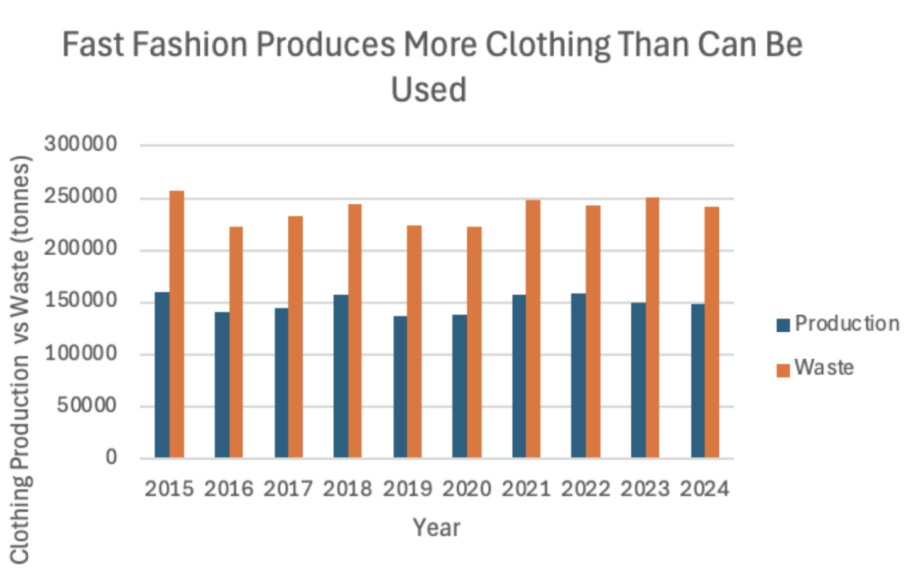
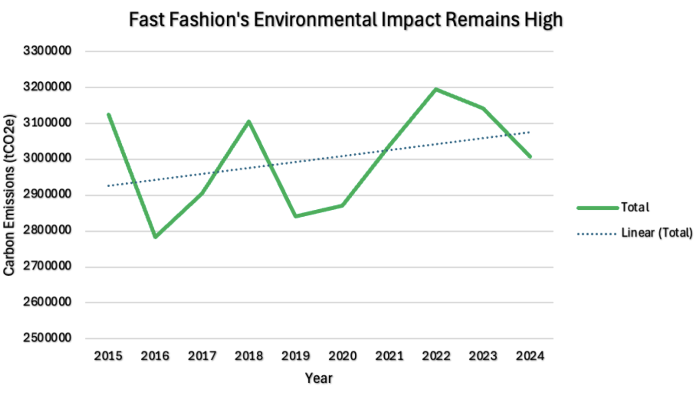
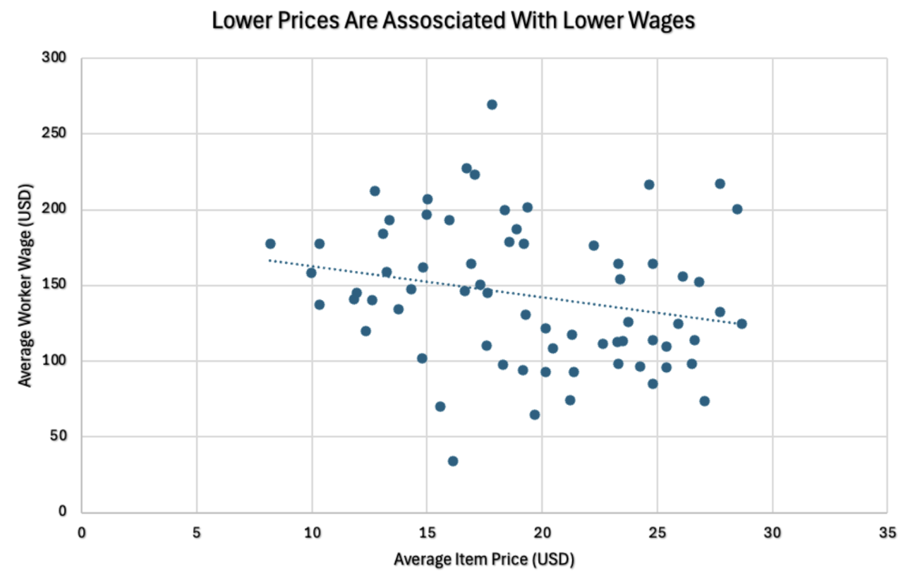

Why cheap clothing is not actually cheap
Fast fashion has transformed clothing into a disposable product. Brands like Shein, Zara, H&M, Forever 21, and Uniqlo release massive amounts of clothing at extremely low prices, encouraging constant consumption and rapid trend turnover.
According to the World Bank , global clothing production has roughly doubled since 2000 while consumers buy more clothing and discard it more quickly than previous generations.
Fast fashion prioritizes speed, volume, and low prices over durability and sustainability. Instead of releasing only seasonal collections, many brands now release new products weekly or even daily.
According to NielsenIQ , Shein introduced roughly 315,000 new products in 2022 alone, greatly exceeding competitors like Zara and H&M.

Landfill waste consistently remains high alongside clothing production, showing how fast fashion creates long-term accumulation rather than temporary consumption.
The relationship between production and waste demonstrates how clothing continues to accumulate over time through discarded items, unsold inventory, and returned products.
Waste does not only come from clothing produced within a single year. Instead, fast fashion creates a growing backlog of garments that continue entering landfills over time.

Despite yearly fluctuations, carbon emissions from fast fashion remain consistently high, reflecting the industry’s ongoing environmental impact.
Fast fashion contributes heavily to carbon emissions through manufacturing, transportation, and textile production. According to Earth.org , the fashion industry is responsible for roughly 10% of global carbon emissions.
Water usage also plays a major role in environmental damage. Cotton production requires enormous amounts of water, while synthetic materials contribute to microplastic pollution in oceans and waterways.

Lower-priced clothing is often associated with lower worker wages, suggesting that inexpensive fashion frequently depends on reduced labor costs.
The pressure to keep clothing prices low often depends on reducing labor costs throughout global supply chains.
According to the Tricontinental Institute , many garment workers in Bangladesh continue to face long hours, unsafe conditions, and inadequate wages years after the Rana Plaza factory collapse.
Fast fashion may appear affordable, but the data shows that its true cost is much higher. Overproduction creates landfill waste, emissions remain consistently high, and labor costs are reduced to maintain low consumer prices.
While consumers pay less at checkout, the environmental and human costs continue long after clothing is purchased.